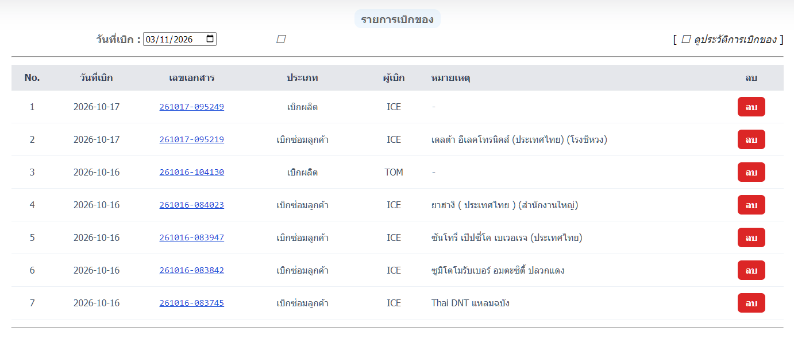
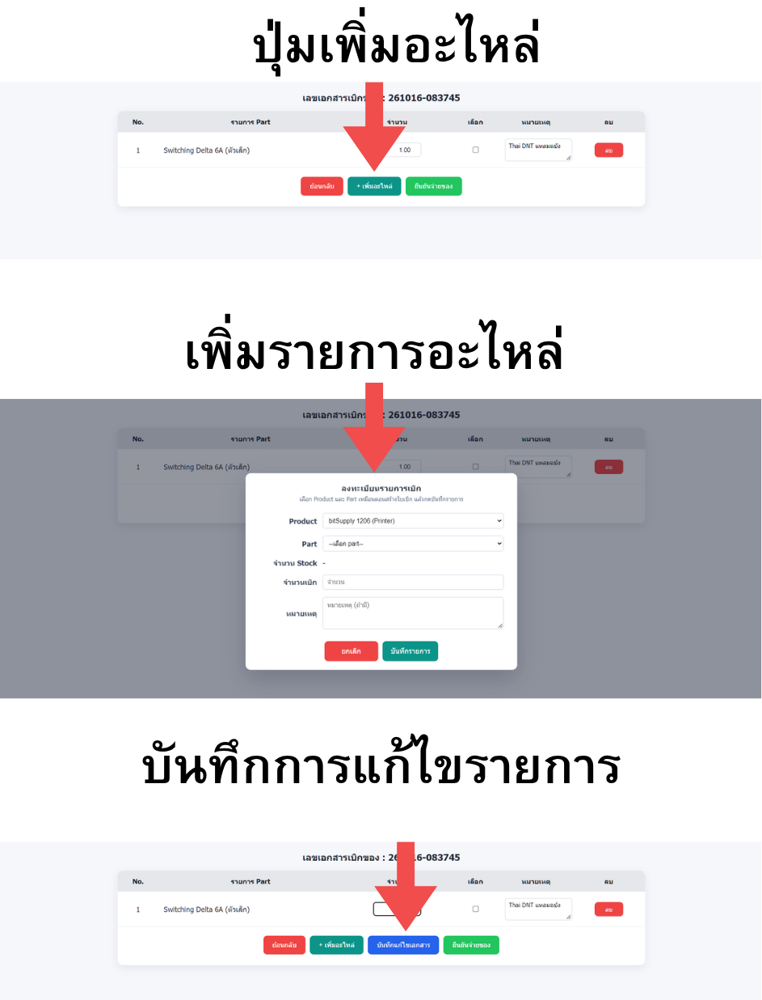

สรุปการอัปเดตระบบ Inventory
งานปรับปรุงหน้ารายการเบิกของ และเอกสารเบิกรอคลังจ่าย — ใช้ประกอบการขออนุมัตินำขึ้น Server
ภาพรวมสั้น ๆ: ให้คลังแก้เอกสารเบิกที่ยังไม่จ่ายได้ครบ (เพิ่ม/ลบอะไหล่ แก้จำนวนและหมายเหตุ) แยกจากขั้นตอน «ยืนยันจ่ายของ» เดิม และปรับหน้ารายการเบิกให้อ่านง่ายขึ้น (คอลัมน์หมายเหตุ ความกว้างตาราง ตัวอักษรสม่ำเสมอ)
1. สิ่งที่ผู้ใช้จะเห็นเปลี่ยน
ด้านล่างเป็นภาพตัวอย่างจากหน้าจอจริง / mockup ประกอบให้เห็นภาพก่อน deploy

pickup_overview.php)
ตารางกว้างเท่าเส้นคั่นบน–ล่าง อ่านรายการรอจ่ายได้ชัดขึ้น
No. / วันที่ / เลขเอกสาร / ประเภท / ผู้เบิก — กึ่งกลาง
หมายเหตุ — ชิดซ้าย (ข้อความยาวตัด … ชี้เมาส์ดูเต็ม)
ปุ่มลบเอกสาร — ยืนยันก่อนลบ

pickup_list_order_detail.php)
แก้รายการในเอกสารได้ก่อนจ่ายของจริง
+ เพิ่มอะไหล่ — popup เลือก Product → Part
บันทึกแก้ไขเอกสาร — โผล่เมื่อแก้จำนวน/หมายเหตุ (ยังไม่ตัดสต็อก)
ยืนยันจ่ายของ — ขั้นตอนเดิม (รหัสผ่าน → ตัดสต็อก)
แยก 2 ขั้นตอนให้จำง่าย (รูปที่ 2)
บันทึกแก้ไขเอกสาร
เพิ่ม / ลบ / แก้จำนวน / หมายเหตุ
ยังไม่ตัดสต็อก · เอกสารยังรอจ่าย
→
ยืนยันจ่ายของ
ใส่รหัสผ่าน → บันทึก log
ตัดสต็อกตามระบบเดิม
- หน้ารายการเบิกของ — ดูรูปที่ 1
- หน้ารายละเอียดเอกสาร — ดูรูปที่ 2 และแผนภาพด้านบน
- ลบทั้งเอกสารจากหน้ารายการ (คอลัมน์ «ลบ» ในรูปที่ 1) — ส่งแบบ POST + CSRF ปลอดภัยกว่าเดิม
2. ไฟล์ที่ต้อง copy ขึ้น Server
| ไฟล์ | หมายเหตุ |
|---|---|
pickup_overview.php |
หน้าหลักรายการเบิก — ปรับพื้นที่แสดงผล AJAX |
pickup_list_order.php |
ตารางรายการ + ลบเอกสาร + layout / หมายเหตุ |
pickup_list_order_detail.php |
หน้ารายละเอียด ปุ่มและ UI แก้เอกสาร / จ่ายของ |
pickup_list_order_edit.php ไฟล์ใหม่ |
API JSON: ค้นหา part, เพิ่ม, ลบแถว, บันทึกแก้ไขเอกสาร |
ไฟล์อื่น เช่น pickup_save_log.php, connect.php — ไม่จำเป็นต้องเปลี่ยนในรอบนี้ (ยกเว้น server ยังไม่มี dependency เดิมของ popup เช่น list_part.php / list_stock.php ซึ่งมีอยู่แล้วในระบบ)
3. พฤติกรรมระบบที่ควรรู้ (แยก 2 ขั้นตอน)
| การกระทำ | ผลต่อสต็อก | สถานะเอกสาร |
|---|---|---|
| บันทึกแก้ไขเอกสาร / เพิ่ม-ลบอะไหล่ | ยังไม่ตัดสต็อก | ยังเป็น pre_status = 'pre' |
| ยืนยันจ่ายของ (รหัสผ่าน + บันทึกเดิม) | ตัดสต็อกตาม flow เดิม | เปลี่ยนเป็น pickup / log ตามเดิม |
4. ด้านความปลอดภัย (สรุป)
- คำสั่งฐานข้อมูลใช้ prepared statement ไม่ต่อ string SQL จากผู้ใช้
- การลบเอกสารและการแก้รายการใช้ CSRF token ใน session
- แก้/ลบได้เฉพาะเอกสารที่ ยังรอจ่าย (
pre_status = 'pre') - ข้อความแสดงบนหน้าเว็บผ่านการ escape เพื่อลดความเสี่ยง XSS
5. แผนทดสอบหลัง Deploy (แนะนำ)
- เปิด รายการเบิกของ — ตรวจตารางเต็มความกว้าง หมายเหตุ และปุ่มลบ
- เข้าเอกสารรอจ่าย — เพิ่มอะไหล่ 1 รายการ ลบ 1 รายการ แก้จำนวน/หมายเหตุ แล้วกด บันทึกแก้ไขเอกสาร
- รีเฟรชหน้า — ตรวจว่าค่าที่บันทึกยังอยู่ และสต็อกยังไม่เปลี่ยน
- ทดสอบ ยืนยันจ่ายของ 1 เอกสารทดลอง — ตรวจ log และสต็อกตามปกติ
- ลบเอกสารทดลองจากหน้ารายการ — ตรวจว่าแถวหายและไม่ error
6. ความเสี่ยงและการย้อนกลับ
- ความเสี่ยงต่ำ ไม่เปลี่ยนโครงสร้าง DB — rollback โดยนำไฟล์ 4 รายการกลับเป็นเวอร์ชันเดิมบน server
- หากเอกสารถูกลบแถวหมด หน้ารายละเอียดอาจแก้ไม่ได้จนกว่าจะมีแถวในเอกสาร (ข้อจำกัดเดิมของ logic ใหม่)